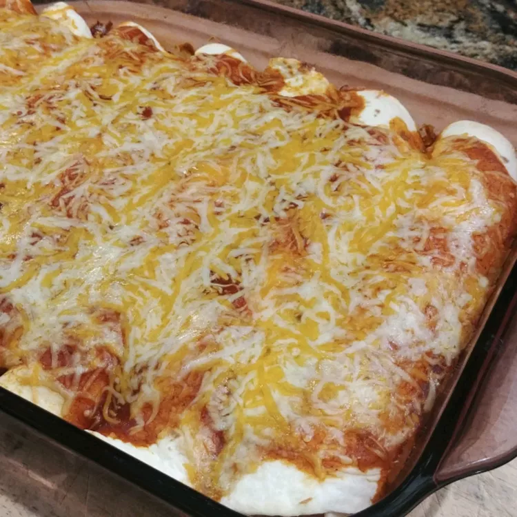

Enchiladas

Beef Enchilada Recipe
Ingredients
- 1 lb. of ground beef
- 1 bag of cheddar cheese
- Flour or corn tortillas
- 1 package of taco seasoning
- 1 can of enchilada sauce OR Easy Enchilada Sauce Recipe (Below)
- 1 onion
Easy Enchilada Sauce (Optional)
- 3 T of oil
- 3 T of flour
- 2 T of chili powder
- 2 cups of chicken broth
- 8 oz of tomato sauce
- 1-2 t of chopped garlic or 1 t of garlic powder
- 1 t of oregano
- 1 t of cumin
Instructions
Making the Enchilada Sauce
- Heat 3 T of oil in a pan over low to medium heat.
- When the oil is hot, whisk flour and chili powder, cooking for 1-2 minutes.
- Mix remaining ingredients and bring to a boil.
- Immediately reduce heat ans simmer for 10 minutes.
- Enjoy!
Making the Enchiladas
- Preheat the oven to 375 degrees Fahrenheit.
- Chop and mince onion and set off to the side.
- Grind beef in a pan with meat chopper before heating.
- Once meat is ground, add heat on stove. Cook ground beef while continuously moving it around the pan.
- Add the minced onions to the ground beef while cooking.
- Once meat and onions are thoroughly cooked, put in a bowl and mix in the taco seasoning.
- Open the enchilada sauce and put a small amount on the bottom of a casserole dish.
- Lay the desired number of tortillas in the dish. Fill with the taco meat and then top with cheese before wrapping tortilla.
- Top the wrapped tortillas with remaining enchilada sauce and then cover with cheese.
- Spray tin foil with non-stick cooking spray and cover the casserole dish.
- Put enchiladas in the oven at 375 degrees Fahrenheit for 30 minutes.
- At the 30 minute, take off the foil, and put enchiladas back in the oven for another 10-15 minutes until golden-brown.
- Remove from the oven and let cool for 5-10 minutes.
- Serve.
Back to Main